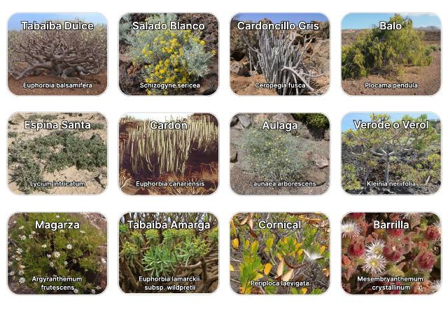
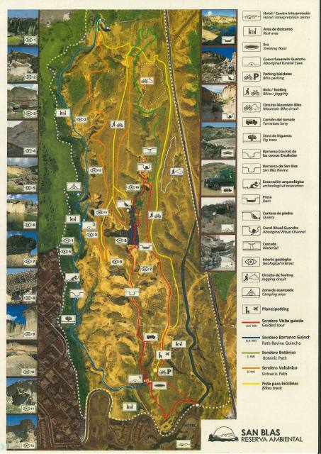
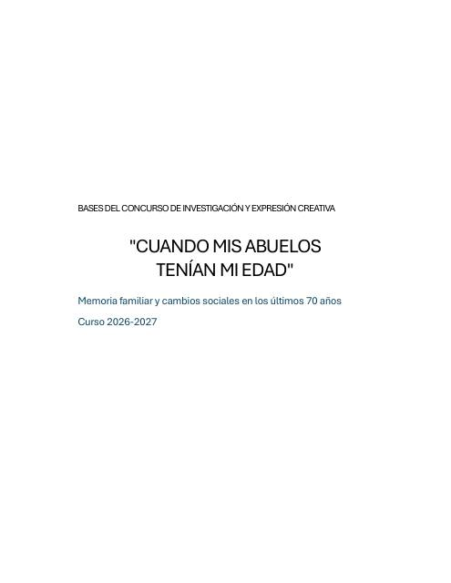
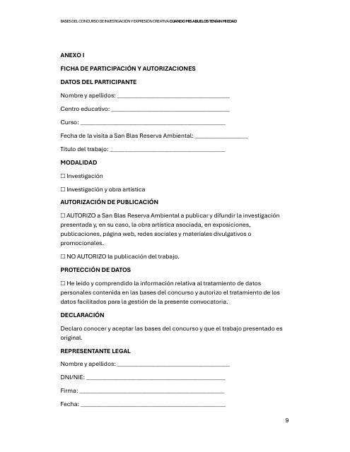
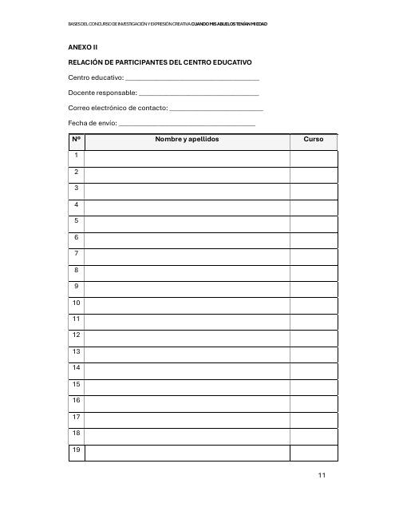
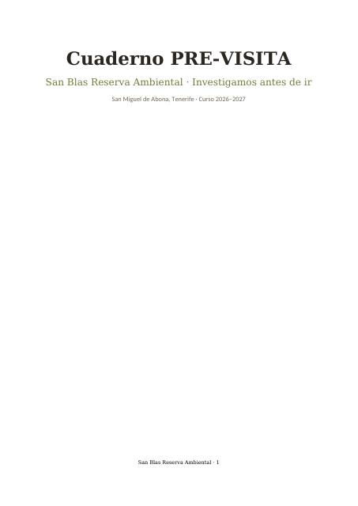
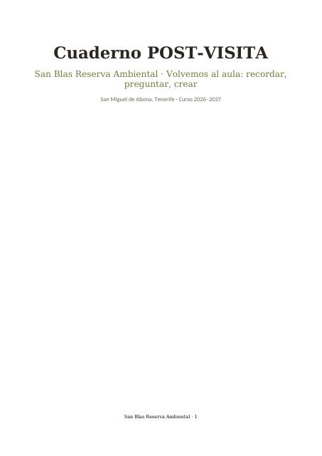
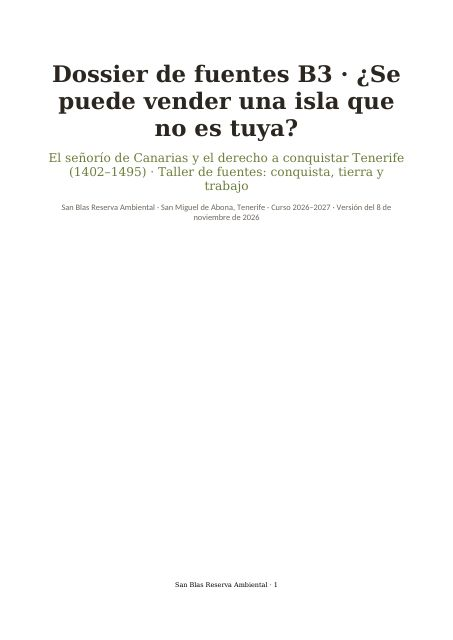

Guía de plantas
Las especies vegetales que se encuentran en la Reserva.
San Blas Reserva Ambiental · San Miguel de Abona, Tenerife
Guías de campo, el concurso escolar del curso 2026-27, cuadernos didácticos para el aula, una galería de fotos de hace cien años y el catálogo vivo de la Reserva en iNaturalist, al que puede sumarse cualquier visitante.
01 · Documentación disponible
Para reconocer en el sendero las plantas, las aves y los polinizadores de la Reserva, y para orientarse con el mapa.

Las especies vegetales que se encuentran en la Reserva.
Las aves que se pueden ver y oír durante el recorrido.

Para situarse y seguir el recorrido por la Reserva.
Abejas, mariposas y otros insectos que solo viven en las islas.
02 · Concurso 2026-27
Las bases y los dos anexos que el centro educativo debe rellenar para participar.

Condiciones de participación, plazos y premios.

Datos del centro y del trabajo presentado.

Listado del alumnado y profesorado del centro educativo.
03 · Cuadernos y dossieres 2026-27
Cuadernos para trabajar en el aula, porque durante las dos horas y media de visita el alumnado no escribe: observa, escucha y pregunta.

Preparar la mirada: agua, paisaje e historia de las medianías del sur antes de llegar a San Blas.

Volver sobre lo vivido: debates, crónicas y proyectos para cerrar el aprendizaje en clase.

El señorío de Canarias y la venta del derecho a conquistar Tenerife (1402–1495): siete fuentes con versión actualizada, comentario guiado y rúbrica. Para el programa B3 e Historia de Canarias; versión ligera para ESO en el cuaderno pre-visita.
Aquí siempre está la última versión de cada cuaderno y dossier. Consulten el histórico de versiones.
04 · Galería interactiva
Comparen cada foto original de la FEDAC con su recreación en color y viajen en el tiempo hasta hoy. Doce escenas: aguadores, aparceras del tomate, almacenes de plátanos, la bahía de Santa Cruz…
05 · Ciencia ciudadana
Entre todas las personas que recorren la Reserva estamos reuniendo un catálogo de los seres vivos que la habitan: plantas, aves, insectos, reptiles, hongos… Cada observación con foto y ubicación suma un dato real para conocer y proteger el barranco.
+500.000 m² de Reserva donde cada observación cuenta
La comunidad de iNaturalist ayuda a identificar cada especie. Las observaciones confirmadas alcanzan el «grado de investigación» y pasan a bases de datos científicas internacionales como GBIF.
En ESO, Bachillerato y FP, el móvil es bienvenido durante la visita cuando se usa para fotografiar y catalogar la fauna y la flora. No rompe la regla de oro: el alumnado no escribe en San Blas, solo mira y fotografía, y la identificación se hace después, en clase, con el cuaderno post-visita.
Alumnado menor de 14 años. iNaturalist no admite cuentas de menores de 13 años y en España el consentimiento propio para tratar datos personales se fija en 14. Lo más sencillo es que el alumnado haga las fotos con la ubicación activada y que el profesorado las suba en clase desde una cuenta del centro. Comprueben también que este uso del móvil encaja con las normas de su centro.